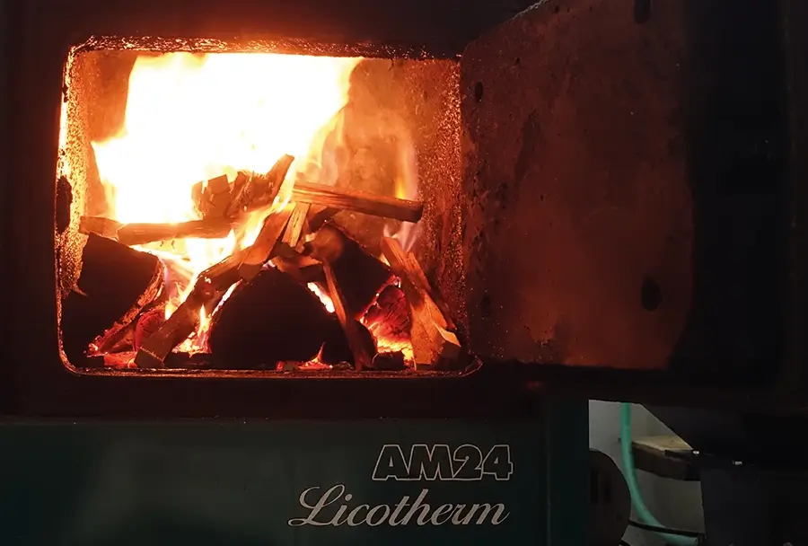
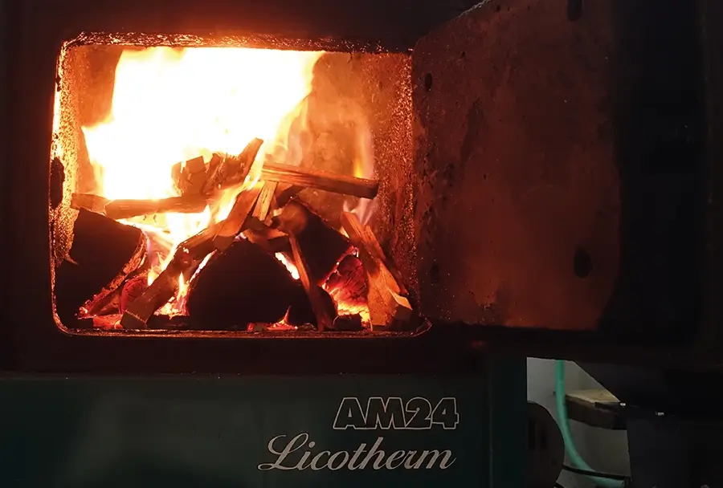
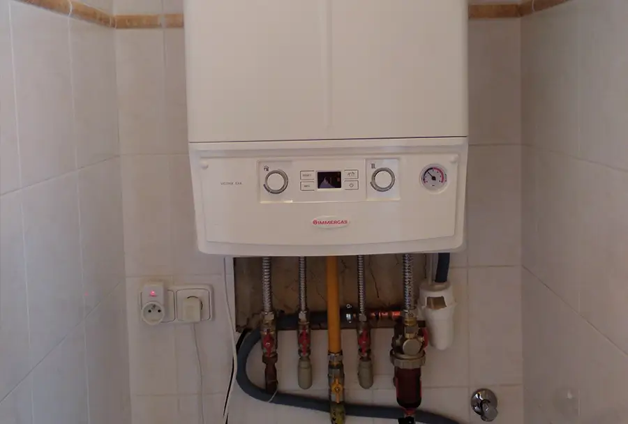
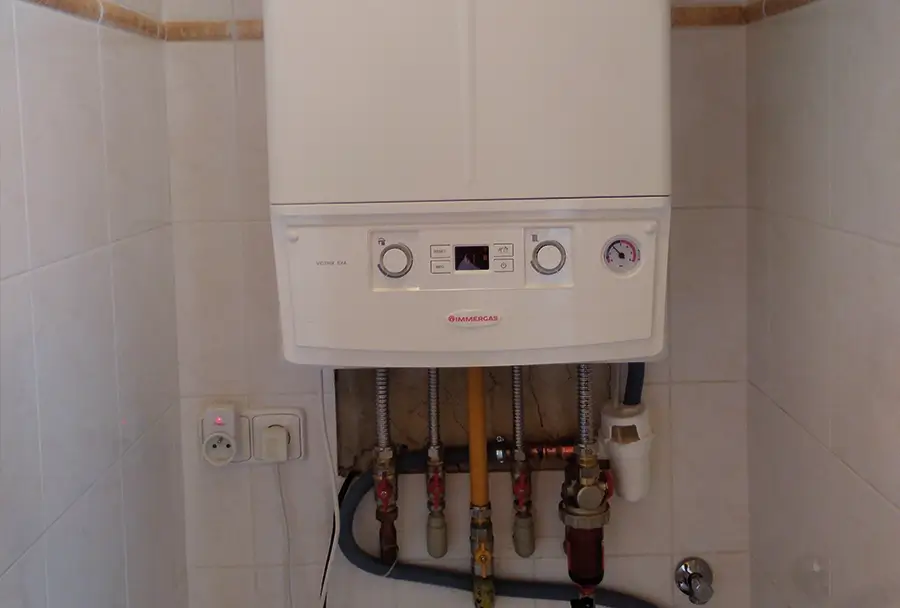

Montáž kotlů

Na pelety
Kotle na pelety řady AM ‑ Licotherm jsou kotle od českého výrobce Agromechanika v.o.s.. Je to ukázka poctivé práce českých rukou včetně řídící elektroniky od českého výrobce KTR‑ADEX.
Kotle řady BIO jsou výhradně určeny pro spalování dřevních pelet 6‑10mm.
Řada AM Licotherm je určena pro spalování hnědého uhlí ořech 2, dřevních pelet a doplňkově i kusového dřeva.
Všechny tyto kotle jsou vybaveny zásovníkem paliva a automatickým podavačem. Retortový hořák LING je jednou z předností tohoto výrobce.
 

Na dřevo
Kotle na dřevo ATMOS jsou na českém trhu jedny z nejlepších s účiností 86,3‑92%.
Kotel je tvořen násypkou, zplynovací tryskou a dohořívacím prostorem. Takřka vždy je zapojujeme do systému s vhodnou akumulační nádobou.
Kotle je možné řídit vestavěným regulátorem ATMOS ACD 03 s dotykovým displejem nebo uživatelsky jednoduchou regulací KTR‑ADEX.
 

Plynové kondenzační kotle
Kondenzační kotle využívají nejenom tepelnou energii, která vzniká při spalování zemního plynu, ale také teplo uvolněné při kondenzaci vodní páry obsažené ve spalinách. Díky tomu jsou skutečně velmi účinné ‑ dosahují úroveň využití tepla více než 100 % a přitom produkují méně emisí NOx i COx.
Kondenzační kotle jsou vybaveny výměníkem, ve kterém vzniklá pára kondenzuje a vzniklé teplo používá k ohřevu teplé vody, až poté odchází komínem zbytkové spaliny. Díky tomu je topení efektivnější a snižuje náklady na provoz kotle.